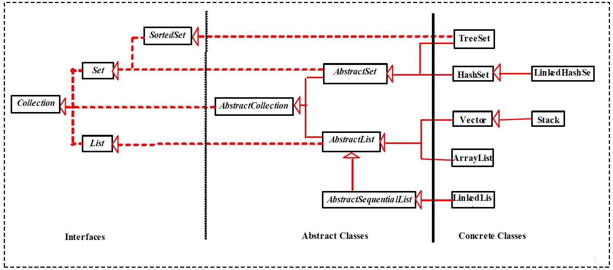
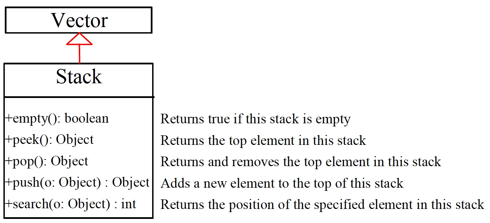

Java Generics
- A way to control a class type definitions
- Otherwise known as parameterised types or templates
- A way of improving the clarity of code
- A way of avoiding casts in code, turning run-time errors (typically
ClassCastExceptioninto compile-time errors.
No Generics vs. Generics
class Stack{
void push(Object o){...}
Object pop(){...}
}
String s = "Hello";
Stack st = new Stack();
...
st.push(s);
...
s = (String)st.pop();
No Generics vs. Generics
class Stack<A>{ // 类参数
void push(A a){...}
A pop(){...}
}
String s = "Hello";
Stack<String> st = new Stack<String>();
st.push(s);
...
s = st.pop();
Collections in Java
- Manipulate grouped data as a single object
- Java provides List, Set, Map
- add, contains, remove, size, loop over, sort, ...
- Insulate programmer from implementation
- array, linked list, hash table, balanced binary tree
- A Java collection is any class that holds objects and implements the Collection interface
- Collections are used along with iterators.
Collection Framework
A collection framework is a unified architecture for representing and manipulating collections. It has:
- Interfaces: abstract data types representing collections
- Implementations: concrete implementations of the collection interfaces
- Algorithms: methods that perform useful computations, such as searching and sorting
Collection Framework

Java Collection Framework Hierarchy
A collection is a container object that represents a group of objects, often referred to as elements.
Set and List are subinterfaces of Collection.

Java Collection Framework Hierarchy
An instance of Map represents a group of objects, each of which is associated with a key. You can get the object from a map using a key,
and you have to use a key to put the object into the map.

Interfaces
- An interface describes a set of methods: no constructors or instance variables
- Interfaces must be implemented by clasess
- 2 or more classes implement an interface
- Classes guaranteed to have the same methods.
- Objects can be treated as the same type.
- Can use different algorithms / instance variables.
Collection Interfaces
Collections also use following interfaces:
ComparatorIteratorListIteratorRandomAccess
Collection Interfaces
Collections also use following interfaces:
- Enables you to work with collections.
List also use following interfaces:
- Extends
Collectionto handle List of elements [objects] - Allows duplicate elements in the list
- Uses indexing technique starting with 0 to access elements
Collection Interfaces
Set also use following interfaces:
- Extends
Collectionto handle set of elements [objects], which must contain unique elements
SortedSet also use following interfaces:
- Extends
Setto handle sorted elements in a set
The Collection Interface
The Collection interface is the root interface for manipulating a collection of objects

A note on iterators
An iterator is an object that enables you to traverse through a collection and to remove elements from
the collection and to remove elements from the collection by calling its
iterator() method.
public interface Iterator{
boolean hasNext();
E next();
void remove(); //optional
}
Another Design Pattern
Example
Iterators provide a general way to traverse all elements in a collection.
ArrayList <String> list = new ArrayList<String>();
list.add("1-FiRsT");
list.add("2-SeCoND");
list.add("3-ThIrD");
Iterator<String> itr = list.iterator();
while (itr.hasNext()){
System.out.println(itr.next().toLowerCase());
}
Example
import java.util.*
public class SimpleCollection{
public static void main(String[] args){
Collection c = new ArrayList();
for (int i=0;i<10;i++)
c.add(i); //Autoboxing
for(Integer i:c)
System.out.println(i);
Iterator it = c.iterator();
while (it.hasNext())
System.out.println(it.next());
}
}
Implementations
A collection class
- implements an ADT as a Java class
- implements all methods of the interface
- selects appropriate instance variables
- can be instantiated
Java implements interfaces with
- List: ArrayList, LinkedList, Vector
- Map: HashMap, TreeMap
- Set: TreeSet, HashSet
Implementations in Java Collection Framework
Vector(legacy), LinkedList, HashMap

Algorithms
Java has polymorphic algorithms to provide functionality for different types of collections.
- Sorting (e.g. sort)
- Shuffling (e.g. shuffle)
- Routine Data Manipulation (e.g. reverse, addAll)
- Searching (e.g. binarySearch)
- Composition (e.g. frequency)
- Finding Extreme Values (e.g. max)
Utility Classes -1
java.util.Collections static methods:
- sort (List)
- binarySearch (List, Object)
- reverse (List)
- shuffle (List)
- fill (List, Object)
- copy (List dest, List source)
- min / max (Collection)
- synchronizedX, unmodifiableX factory methods
- ...
Example
List list = Collections.nCopies(3, "red");
ArrayList arrayList = new ArrayList(list);
Collections.fill(arrayList, "yellow");
Collections.shuffle(arrayList);
List
Like an array
- elements have positions indexed 0...size()-1
- duplicate entries possible
Unlike an array
- can grow as needed
- easy to add/delete at any position
- API independent of implementation (ArrayList, LinkedList)
The List Interface

The List Iterator

List Implementations
ArrayList
- a resizable-array implementation like Vector
- unsynchronized, and without legacy methods
LinkedList
- a doubly-linked list implementation
- May provide better performance than ArrayList, if elements frequently inserted/deleted within the List
- For queues and double-ended queues (deques)
LinkedList

Example
import java.util.*;
public class TestArrayAndLinkedList {
public static void main(String[] args) {
List<Integer> arrayList = new ArrayList<Integer>();
arrayList.add(1); // 1 is autoboxed to new Integer(1)
arrayList.add(2); arrayList.add(3); arrayList.add(1); arrayList.add(4);
arrayList.add(0, 10);
arrayList.add(3, 30);
System.out.println("A list of integers in the array list:");
System.out.println(arrayList);
LinkedList<Object> linkedList = new LinkedList<Object>(arrayList);
linkedList.add(1, "red");
linkedList.removeLast();
linkedList.addFirst("green");
System.out.println("Display the linked list forward:");
ListIterator<Object> listIterator = linkedList.listIterator();
while (listIterator.hasNext()) {
System.out.print(listIterator.next() + " "); }
System.out.println();
System.out.println("Display the linked list backward:");
listIterator = linkedList.listIterator(linkedList.size());
while (listIterator.hasPrevious()) {
System.out.print(listIterator.previous() + " "); } }
}
List Implementations
Vector
- a synchronized resizable-array implementation of a List with additional "legacy" methods.
The Vector Class
- The Java Collections Framework was introducde with Java 2. Several data structures were supported prior to Java 2. Among them
are the
Vectorclass and theStackclass. - In Java 2,
Vectoris the same as ArrayList, except that Vector contains the synchronized methods for accessing and modifying the vector. - If a thread-safe implementation is not needed, it is recommended to use
ArrayListin place of Vector.
The Vector Class

Example
import java.util.Vector;
public class Polygon{ // 存储多边形顶点的Point表
private Vector verties = new Vector();
public void add(Point p){
verties.addElement(p);
}
public void remove(Point p){
verties.removeElement(p);
}
public int numVerties(){
return verties.size();
}
// ..其它方法....
}
The Stack Class
The Stack class represents a "last-in, first-out" stack of objects. The elements are accessed only from the top of the stack.
You can retrieve, insert, or remove an element from the top of the stack.

Example
import java.util.Stack//Using Stack to keep track of who currently
public class Borrow{ // has borrowed something
private String itemName;
private Stack hasIt = new Stack();
public Borrow(String name,String owner){
itemName = name; hasIt.push(owner);
} //首先压进主人的名字
public void borrow(String borrower){
hasIt.push(borrower); }
public String currentHolder(){
return (String)hasIt.peek(); }
public String returnIt(){
String ret=(String)hasIt.pop();
if(hasIt.empty()) //不小心把主人弹出
hasIt.push(ret); //将主人名字入栈
return ret;
}
}
Queue
- A queue is typically a "first-in, first-out" (FIFO) container.
- Queues are commonly used as a way to reliably transfer objects from one area of a program to another.
- A
LinkedListcan be used as a **Queue** implementation.
Example
public class QueueDemo{
public static void printQ(Queue<?> queue){
while (queue.peek()!=null)
System.out.print(queue.remove()+" ");
System.out.println();
}
public static void main(String[] args){
Queue<Integer> queue = new LinkedList<Integer>();
Random rand = new Random(47);
for (int i=0;i<10;i++)
queue.offer(rand.nextInt(i+10));
printQ(queue);
Queue qc = new LinkedList();
for (char c : "Brontosaurus".toCharArray())
qc.offer(c);
printQ(qc);
}
}
DbC vs. Exception
- Exceptions are about dealing with things going wrong at runtime.
- DbC is about statically defining the conditions under which code is supposed to operate.
- The two are nicely complementary.
Unchecked exceptions are “what happens when the contract is broken”.
Checked exceptions are expected to happen from time to time, so are not contract violations.